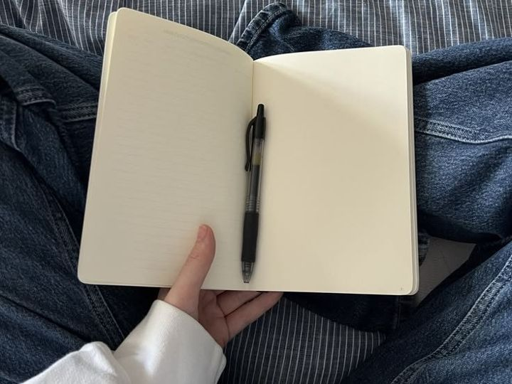
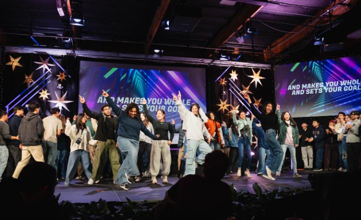
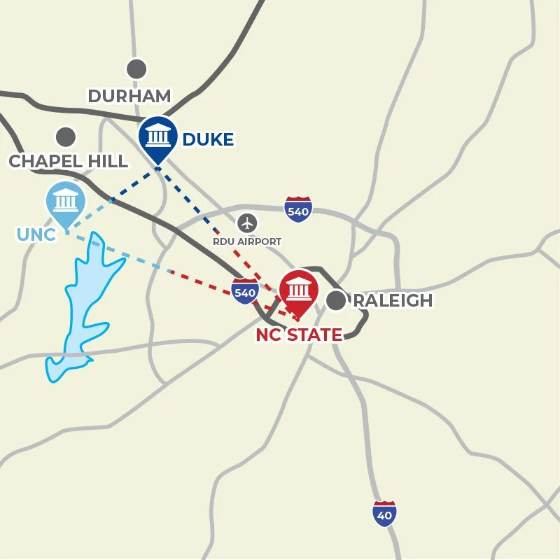
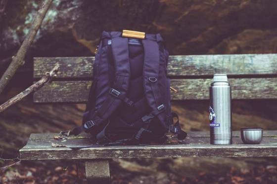
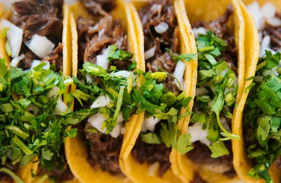
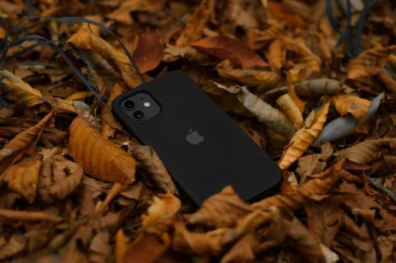
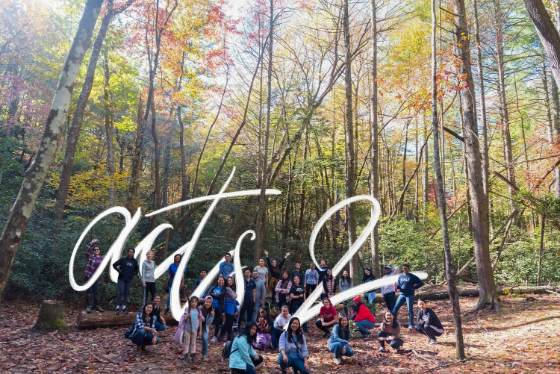

resources
the a2f blog
An extension of the discussions happening in our homes, Bible studies, and coffee shops throughout the week.

Gratitude Journaling: A Thanksgiving Staple
Why gratitude is so much more than just a feel-good exercise.
Read more →
How to Start 2027 Off Right
Two A2F students look back to a pivotal moment in their spiritual lives.
Read more →Fall Bright Spots from the Class of 2030
Hear from this year’s freshmen on what has been the highlight of their first Fall at UNC.
Read more →How Can I Stick to My Faith Without Alienating My Friends?
Unpacking the tension between protecting your relationships and standing by your beliefs in college.
Read more →
Get to Know the Triangle
Welcome to the Triangle! If you’re looking for some fun spots for food, shopping, or nature, our mentors have dropped some of their favorites.
Read more →
The Christian College Survival Kit
Whether you're a freshman finding your first classroom or a senior looking for deeper community, these habits can help you make the most of your college years.
Read more →
How Tacos Changed My College Life
A simple taco dinner with strangers became the beginning of some of the most meaningful friendships and mentorships of my college years.
Read more →
Tales of a Tech Exit Skeptic
What started as a simple experiment—no phone before Scripture—ended up changing my relationship with technology altogether.
Read more →
Welcome to Acts2Fellowship’s Blog!
This blog is an extension of the discussions happening in our homes, Bible studies, and coffee shops throughout the week.
Read more →